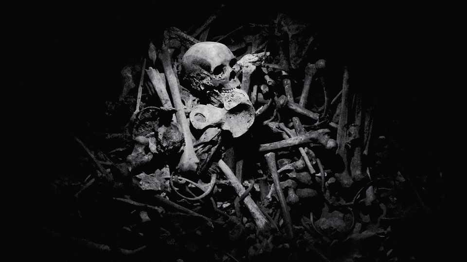

A prizewinning novel explores the legacy of the Rwandan genocide
Gaël Faye’s “Jacaranda” looks at the limits of reconciliation

Aug 13th 2026
IT WAS THE kind of debut every aspiring novelist dreams of. When Gaël Faye, a hip-hop musician turned writer, published “Petit Pays” (“Small Country”) in 2016, it gathered immediate acclaim. The novel—inspired by his experience of the Burundian civil war as a teenager—sold 1.5m copies, was adapted into a film and is now taught in French schools.
It was a tough act to follow. But “Jacaranda”, released in France in 2024, sold nearly 100,000 copies in its first month and won the Prix Renaudot, one of France’s most prestigious literary prizes. This time Mr Faye—whose father is French and whose mother is Rwandan—draws on his memories of visiting his mother’s homeland as a child. His spare, lucid prose, now translated into English, explores the aftermath of the genocide of 1994, when perhaps 500,000 people, most of them ethnic Tutsi, were killed over the course of three months.
The story is told from the perspective of Milan, a French-Rwandan boy living in Versailles. News of the genocide reaches him first through the tv, then through Claude, a young relative who has been attacked with a machete and brought to France for medical treatment. It is not until years later that Milan has the opportunity to visit Rwanda, where he reunites with Claude and meets Eusébie, an old friend of his mother’s.
Rwanda’s authoritarian government requires citizens to follow a policy of reconciliation. Not everyone feels it. Survivors live next to the people who killed their family and friends. Milan observes the efforts of the gacaca courts, community-based tribunals which tried over 1m people accused of genocide-related crimes between 2002 and 2012. He accompanies Claude as he testifies against two genocidaires. The trial brings some justice, but little closure.
Years later, during kwibuka, the annual period of remembrance, Milan watches Eusébie give her testimony. As she talks, people in the crowd collapse, scream out or deliriously beg for their lives from phantom killers. The trauma has reverberated down the generations, Milan observes, for many of the distressed were too young to have been born when the killing began.
“Jacaranda” is a nuanced exploration of conflict and the meaning of resolution. Though it is focused on Rwanda—where the author has lived for many years—the question of whether people can forgive and forget past wrongs is a universal one. Hope lies with the next generation. One scene describes a killer’s sons quietly rebuilding a house their father helped destroy.■